PDF Listo — Manual de usuario
Versión 1.0 · Editor de PDF que funciona sin internet
1. Qué es PDF Listo
PDF Listo es un editor de PDF para Windows que funciona sin internet: tus archivos nunca salen de tu computadora. Tiene tres ideas centrales:
- Pides con palabras, por ejemplo «une, comprime a menos de 2 MB y numera», y la app te muestra un plan antes de hacer nada.
- Trabaja sobre una copia. El archivo original nunca se modifica.
- Verifica el resultado volviendo a leer el archivo final, y te dice si cumple lo que pediste.
2. Instalar y abrir
- Con instalador: ejecuta
PDFListo-1.0.0.exe. Se instala solo para tu usuario (no pide permisos de administrador) y crea un acceso en el menú Inicio. Trae su propio Java: no hace falta instalar nada más. - Versión portable: descomprime
PDFListo-1.0.0-portable.zipy abrePDF Listo.exe. Sirve para llevarla en una memoria USB. - Para abrir un PDF: pulsa Abrir PDF, arrástralo a la ventana o elígelo en Recientes. Puedes tener varios PDF abiertos y cambiar entre ellos con la lista de documentos.
La primera vez aparece un recorrido de bienvenida de 5 pantallas. Puedes verlo otra vez en Ayuda (?) → Recorrido de bienvenida.
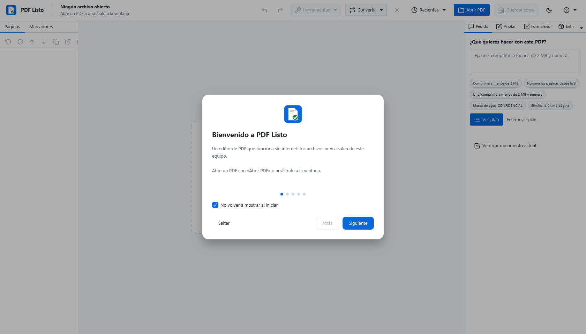
3. La ventana
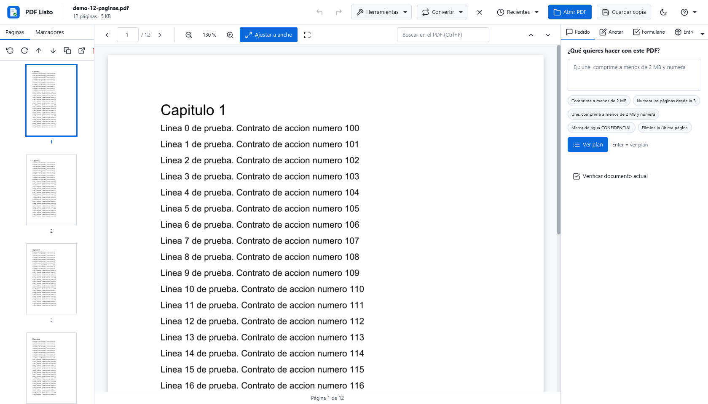
- Barra superior: deshacer/rehacer, Herramientas, Convertir, Recientes, Abrir PDF, Guardar copia, modo claro/oscuro y Ayuda (?). En pantallas angostas algunos botones se muestran solo con su ícono: al pasar el ratón encima aparece su nombre.
- Izquierda: miniaturas de las páginas (arrastra para reordenar) y marcadores del documento.
- Centro: el visor, con zoom, «Ajustar a ancho», pantalla completa y búsqueda de texto.
- Derecha: las pestañas Pedido, Anotar, Formulario, Entrega, Tachado e Historial.
4. Pedir con palabras (pestaña Pedido)
Escribe lo que necesitas y pulsa Enter o Ver plan. También puedes tocar uno de los ejemplos. Algunas frases que entiende:
| Frase | Qué hace |
|---|---|
| comprime a menos de 2 MB | Prueba niveles de compresión, de suave a fuerte, y elige el primero que cumple. |
| numera las páginas desde la 3 | Pone números abajo, al centro, desde la página 3. |
| une, comprime a menos de 2 MB y numera | Une con los otros PDF abiertos, comprime y numera. |
| marca de agua CONFIDENCIAL | Agrega el texto en diagonal en todas las páginas. |
| elimina la última página / rota la página 2 | Operaciones de páginas. |
| pásalo a A4 · quita los metadatos · hazlo buscable | Tamaño de hoja, limpieza de datos ocultos, OCR. |
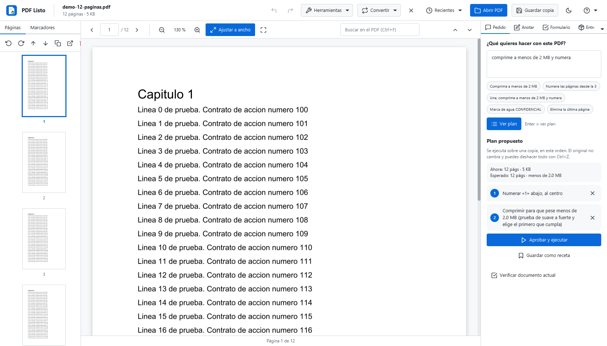
Si falta un dato, la app pregunta en vez de adivinar. Si la frase pide algo que no se hace con un plan (por ejemplo tachar o firmar), te dice en qué pestaña está. Pulsa Aprobar y ejecutar para aplicar el plan o Guardar como receta para reutilizarlo.
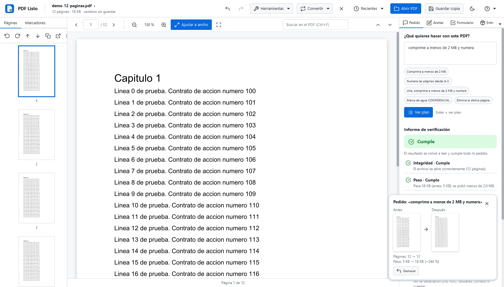
5. Verificación
Después de cada pedido, PDF Listo vuelve a abrir el resultado y comprueba: que se abre bien, el peso, el número de páginas, que cada número de página esté en el margen pedido, la marca de agua, si el texto se puede buscar, si quedan datos sensibles, metadatos y contraseña.
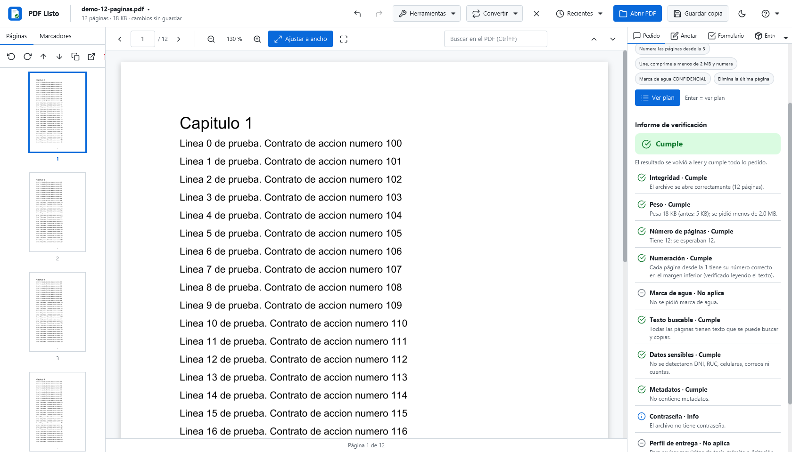
Con Exportar informe PDF obtienes el informe como documento, para adjuntarlo o imprimirlo. Verificar documento actual revisa el PDF tal como está, sin cambiarlo.
6. Páginas y herramientas
- Miniaturas: elige una o varias (Ctrl o Mayús + clic) y usa los botones: rotar, subir, bajar, duplicar, extraer a un PDF nuevo y eliminar (Supr). También puedes arrastrarlas.
- Herramientas: Unir PDF, Dividir, Extraer páginas, Comprimir (niveles o «menos de X MB»), Numerar páginas, Marca de agua, Encabezado y pie (con {pagina}, {total}, {fecha}, {archivo}), Tamaño de página (A4 / Carta), Reconocer texto (OCR) y Leer facturas (QR) a Excel.
- Las operaciones largas muestran una barra de progreso con Cancelar.
7. Guardar, deshacer y recuperar
- Cada cambio crea una versión nueva. Ctrl+Z deshace y Ctrl+Y rehace, sin límite práctico.
- Guardar copia (Ctrl+S) crea un archivo nuevo; el original no se toca. El nombre sugerido sigue el patrón de la pestaña Entrega (por defecto «nombre (editado)»).
- Antes de entregar el archivo, la app lo vuelve a abrir para comprobar que no esté dañado.
- Si la app se cierra de golpe (corte de luz, por ejemplo), al volver a abrirla te ofrece recuperar el trabajo sin guardar. Las contraseñas no se guardan en disco: se te volverán a pedir.
- La pestaña Historial guarda lo que hiciste; con Repetir aplicas el mismo pedido a otro PDF.
8. Privacidad y tachado (pestaña Tachado)
Buscar datos sensibles encuentra DNI, RUC (validando su dígito verificador), celulares, correos, cuentas, CCI y direcciones. Los que no son seguros aparecen como «Posible» y sin marcar. Revisa la lista: lo marcado se ve en rojo en el documento. También puedes dibujar áreas a mano y crear reglas propias (botón de ajustes).
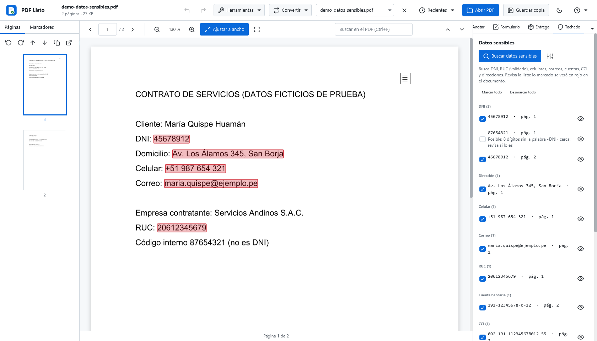
Tachar y verificar borra el dato del archivo (no solo lo tapa con un recuadro negro) y luego relee el resultado. Si quedara algo recuperable, la app no lo declara seguro. Las páginas tachadas se convierten en imagen con texto invisible encima: pesan más y pierden los enlaces.
En Privacidad del archivo puedes ver un informe de privacidad y limpiar los metadatos (autor, programa, fechas). En Contraseña puedes poner o quitar la contraseña y los permisos (imprimir, copiar). Todo lo delicado pide confirmación.
9. Anotar y firmar (pestaña Anotar)
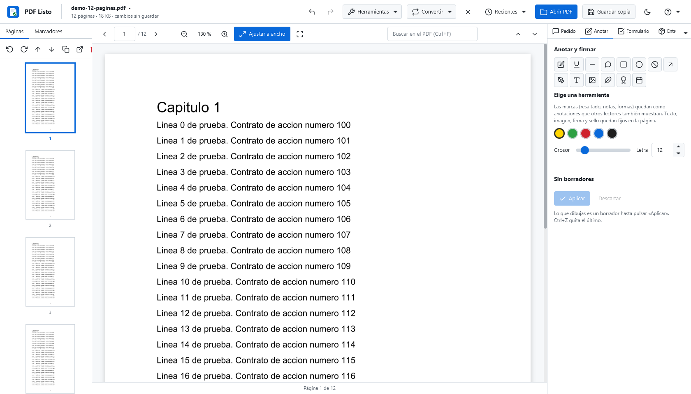
- Resaltar, subrayar, tachar texto, notas, rectángulos, círculos, flechas, dibujo libre, texto, imagen, firma, sello y fecha.
- Lo que dibujas es un borrador hasta que pulsas Aplicar; Descartar lo quita.
- Resaltados, notas y formas quedan como anotaciones PDF reales (otros lectores las muestran y editan). Texto, imagen, firma y sello quedan fijos en la página.
- Firma: dibujada, escrita o desde una imagen. Se guarda en tu biblioteca de firmas junto con su última posición. Es una firma visual, no una firma digital con certificado.
10. Formularios (pestaña Formulario)
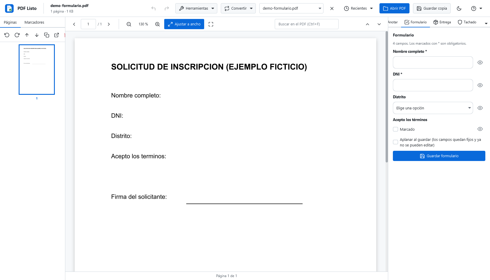
Llena los campos y pulsa Guardar formulario. Si marcas «Aplanar al guardar», los campos quedan fijos y ya no se pueden editar. Los formularios XFA (Adobe LiveCycle) no se pueden llenar; la app lo avisa.
11. Escaneados (OCR)
Cuando abres un PDF escaneado (solo imágenes), la app te avisa. Con Herramientas → Reconocer texto (OCR) se agrega una capa de texto invisible: el PDF se ve igual, pero se puede buscar, copiar y revisar sus datos sensibles.
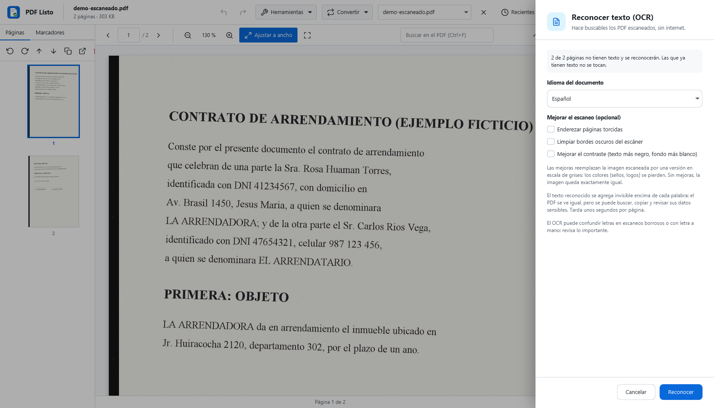
Mejoras opcionales: enderezar páginas torcidas, limpiar bordes oscuros y mejorar el contraste (la página pasa a escala de grises). El OCR tarda unos segundos por página y puede confundir letras en escaneos borrosos o con letra a mano. Las páginas escaneadas de costado o de cabeza se detectan y se ponen derechas solas (opción «Poner derechas las páginas giradas», activada por defecto); el aviso final dice cuáles se giraron.
12. Perfiles, recetas y facturas (pestaña Entrega)
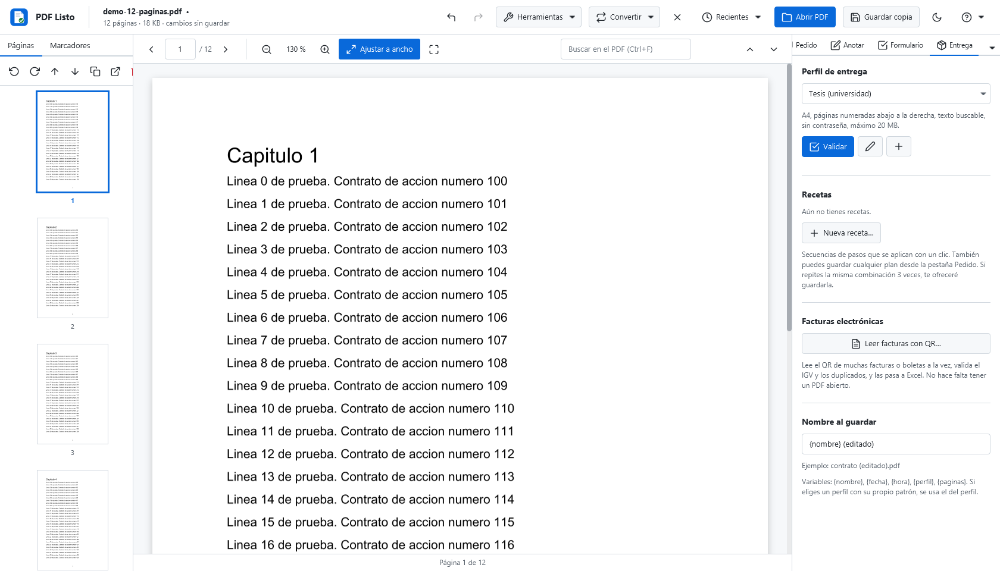
- Perfil de entrega: reglas de un trámite (tesis, trámite, licitación… o uno propio): tamaño de hoja, numeración, peso máximo, texto buscable, sin contraseña. Validar dice qué cumple y qué no; Corregir… propone un plan para arreglarlo.
- Recetas: combinaciones de pasos que se aplican con un clic. Si repites la misma combinación 3 veces, la app te ofrece guardarla (tú decides).
- Facturas electrónicas: lee el código QR de muchas facturas o boletas a la vez, también escaneadas. Valida el IGV, el RUC, la fecha y los duplicados, y crea un Excel con fórmulas y una hoja de resumen. Solo funciona con comprobantes que tienen QR; el QR no trae el nombre del proveedor ni los ítems.
- Nombre al guardar: patrón con {nombre}, {fecha}, {hora}, {perfil} y {paginas}.
13. Convertir
El botón Convertir de la barra superior ofrece:
- Hacia PDF (no necesitan un PDF abierto; el resultado se abre solo): imágenes JPG/PNG a PDF (por ejemplo, fotos de un documento tomadas con el celular; puedes ordenarlas), texto (.txt) a PDF y Word a PDF.
- Desde el PDF abierto: PDF a imágenes (PNG o JPG, 150 o 300 dpi), PDF a texto (.txt) y extraer las imágenes que contiene.
«Word a PDF» usa LibreOffice (gratuito, de libreoffice.org). Si no está instalado, la opción aparece desactivada y todo lo demás funciona igual.
14. Ayuda y componentes
El botón ? tiene: recorrido de bienvenida, este manual, Comprobar componentes, abrir la carpeta de datos y «Acerca de» (versión y licencias de las bibliotecas usadas).
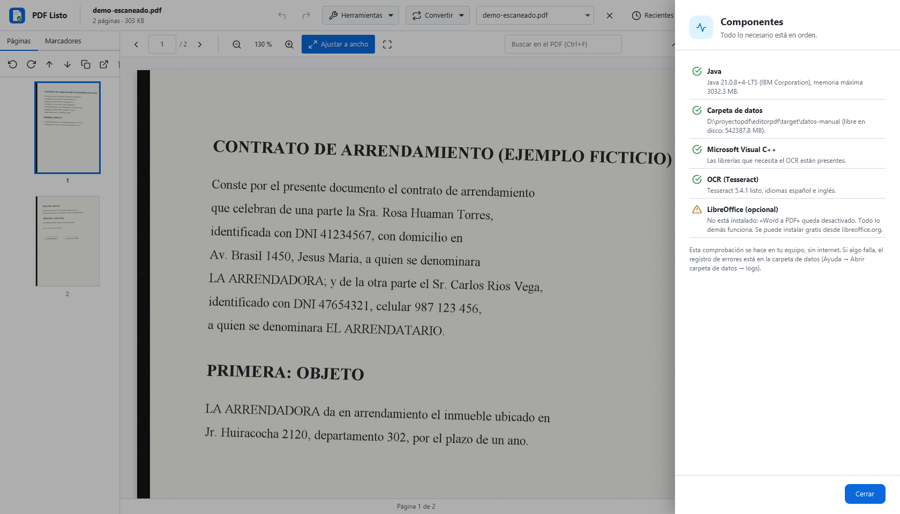
Tus datos de la app (historial, recetas, firmas, configuración y registro de errores) están en
%APPDATA%\PDFListo. El modo oscuro se activa con el botón de la luna.
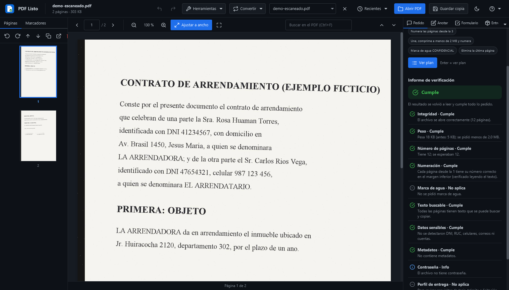
15. Atajos de teclado
| Atajo | Acción |
|---|---|
| Ctrl+O | Abrir PDF |
| Ctrl+S | Guardar copia |
| Ctrl+W | Cerrar el documento |
| Ctrl+Z / Ctrl+Y | Deshacer / rehacer |
| Ctrl+R / Ctrl+Mayús+R | Rotar a la derecha / izquierda |
| Ctrl+D | Duplicar páginas elegidas |
| Supr | Eliminar páginas elegidas (en las miniaturas) |
| Ctrl+F | Buscar en el PDF (Enter siguiente, Mayús+Enter anterior) |
| Ctrl++ / Ctrl+- / Ctrl+0 / Ctrl+1 | Acercar / alejar / ajustar a ancho / 100 % |
| Re Pág / Av Pág, Ctrl+Inicio / Fin | Página anterior / siguiente, primera / última |
| F11 | Pantalla completa |
16. Problemas frecuentes
Un PDF no abre
La app explica la causa probable: dañado, protegido con contraseña (te la pide) o no es un PDF. PDFBox intenta repararlo automáticamente; si no puede, prueba a abrirlo e imprimirlo como PDF desde otro lector.
El OCR no funciona
Abre Ayuda → Comprobar componentes. Si falta «Microsoft Visual C++», instala «Microsoft Visual C++ Redistributable 2015-2022 (x64)», gratuito, de Microsoft. La versión instalada ya trae esas librerías.
La verificación dice «Revisar»
Lee el detalle: dice qué no se cumplió y en qué páginas. Por ejemplo, si el PDF ya tenía otra numeración o si la compresión no alcanzó el peso pedido. Puedes deshacer con Ctrl+Z.
Comprimir casi no reduce el peso
Los PDF que son solo texto ya están optimizados; la compresión reduce sobre todo las imágenes.
Dónde está el registro de errores
Ayuda → Abrir carpeta de datos → logs\pdflisto.log. No contiene tus documentos.